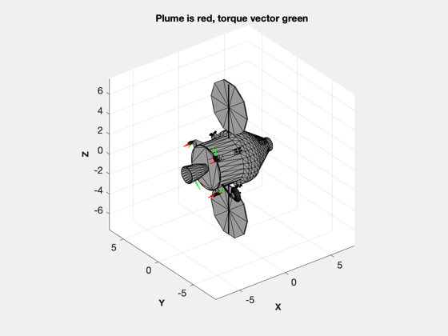

Layout thrusters for the Orion capsule.
This script shows how you can use ThrusterLayout to place thrusters on a CAD model, in this case from a commercial obj file. -------------------------------------------------------------------------
%-------------------------------------------------------------------------- % Copyright (c) 2013 Princeton Satellite Systems, Inc. % All rights reserved. %-------------------------------------------------------------------------- % From the web %------------- thrustMain = 33000; thrustMid = 536; thrustSml = 111; thrust = [thrustMid*ones(1,8) thrustSml*ones(1,16) thrustMain]; n = length(thrust); % Give the name of the obj file %------------------------------ ThrusterLayout( 'initialize', 'orion.obj' ); % There are 12 3 N thrusters %-------------------------------------------------------- % The big thrusters %------------------- n = 12; r = zeros(3,n); u = zeros(3,n); a = 0.95*sqrt(2.018^2 + 1.673^2); d = 0.8*pi/32; a0 = linspace(pi/4,2*pi-pi/4,4); ang = zeros(1,8); for k = 1:4 j = 2*k-1; ang(j:j+1) = [a0(k)-d a0(k)+d]; end rB = [ -2.386*ones(1,8);... a*cos(ang);... a*sin(ang) ]; uB = [1 1 1 1 1 1 1 1 ;0 0 0 0 0 0 0 0;0 0 0 0 0 0 0 0]; u(:,1:8) = uB; r(:,1:8) = rB; % The main engine %----------------- r(:,n) = [-2.408;0;0]; u(:,n) = [ 1.000;0;0]; ThrusterLayout( 'update', u, r ); % PSS internal file version information %--------------------------------------